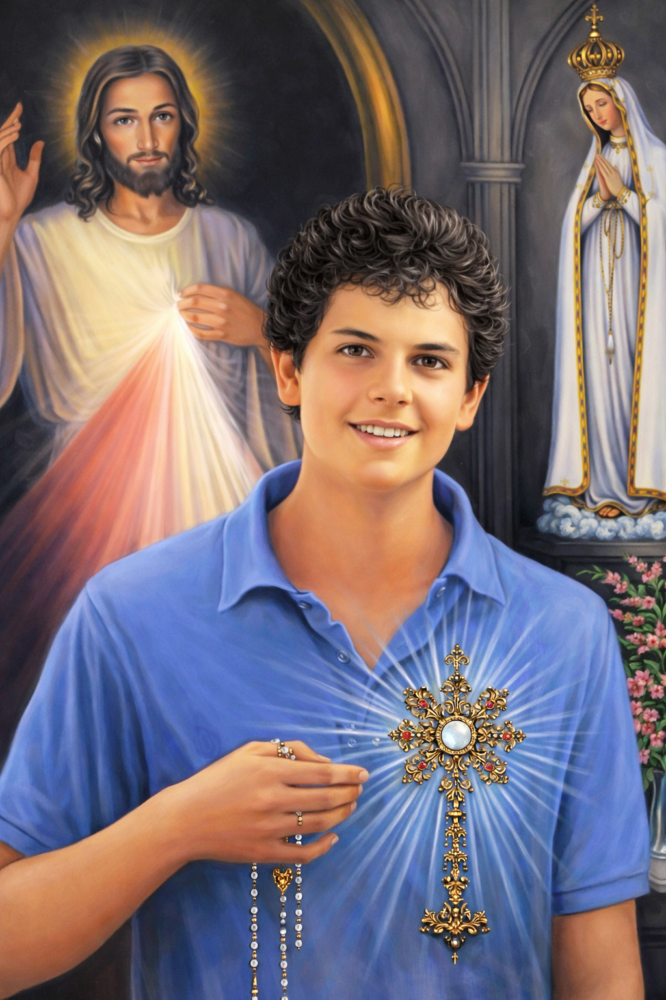

Carlo Acutis was born on May 3, 1991 in London but was raised in Milan, Italy. From a young age, Carlo displayed a remarkable devotion to God. Despite his ordinary life as a student, his spiritual practices were extraordinary. He attended Mass daily, recited the Rosary, and often spent time in Eucharistic adoration. His love for the Blessed Sacrament became the foundation of his spiritual life, which he referred to as his "Highway to Heaven." However, Carlo was not isolated from the world. He loved computers, video games, and soccer. His passion for technology led him to create a website cataloging Eucharistic miracles at just 11 years old. Through this project, he sought to deepen people's understanding and appreciation of the Eucharist, bridging faith and technology in a way that resonates with today's youth.
He was only 15 years old when he died in a hospital in Monza, Italy, in 2006, offering all his sufferings for the Church and for the Pope. Carlo Acutis was beatified on Saturday, October 10, 2020, in Assisi. He was a normal, handsome, and popular boy. A natural jokester who enjoyed making his classmates and teachers laugh. He loved playing soccer, video games, and had a sweet tooth. Carlo couldn't say "no" to Nutella or ice cream. Putting on weight made him understand the need for self-control. It was one of the many struggles Carlo had to overcome and learn how to master the art of self-control, to master the virtue of temperance, starting with the simple things. He used to say, “What’s the use of winning 1,000 battles if you can't beat your own passions?”
Carlo's motto reflects the life of a normal teenager who strived to be the best version of himself, living the ordinary in an extraordinary way. He used his first savings to buy a sleeping bag for a homeless man he often saw on the way to Holy Mass. He could have bought himself another video game for his game console collection. Instead, he chose to be generous. This was not an isolated instance. His funeral was packed with many of the city's poor residents that Carlo had helped, demonstrating that the generosity he had extended to the homeless man on his way to Mass had been offered to many other people as well. When he was gifted a diary, he decided to use it to track his progress: "good marks" if he behaved well and "bad marks" if he did not meet his expectations. In that same notebook he noted down, “Sadness is looking at oneself, happiness is looking at God. Conversion is nothing but a movement of the eyes.”
He was a "natural jokester" as his mother, Antonia Salzano, once commented in an interview. His classmates would burst out in laughter at his remarks, and so would the teachers. Since he realized it could annoy and disrupt others, he made an effort to change in that regard as well. Making life pleasant for those around him through little acts was a constant in his life. He did not like the cleaning staff picking up after him, even if they were paid for that. So he set the alarm clock a few minutes earlier to tidy up his room and make the bed. Raejsh, a Hindu who cleaned at Carlo's house, was impressed that someone "as handsome, young and rich” decided to live a simple life. He was captivated by Carlo’s deep faith, charity, and purity.
Cleanliness: Purity was very important in Carlo's life. "Each person reflects the light of God," was something he commonly said. It hurt him when his classmates did not live according to Christian morals. He would encourage them to do so, trying to help them understand that the human body is a gift from God and that sexuality had to be lived as God had intended. "The dignity of each human being was so great, that Carlo saw sexuality as something very special, as it was collaborating with God's creation," his mother recalled. Carlo also enjoyed putting on his diving goggles and playing “fetch trash from the bottom of the sea.” When he took the dogs out for a walk, he always picked up whatever garbage he came across. It was his way of improving his corner of the world.
Passion for the Eucharist: Carlo's true passion was the Eucharist: "his highway to heaven". This led to his mother's conversion. A woman who had only gone "three times to Mass in her life" was conquered in the end by the boy's affection for Jesus. She enrolled herself in a theology course so she could answer all the questions of her young son. At the age of 11, Carlo began to investigate the Eucharistic miracles that have occurred in history. He used all his computer knowledge and talents to create a website that traced that history. It comprises 160 panels that have also made the rounds of more than 10,000 parishes worldwide. Carlo could not understand why stadiums were full of people and churches were empty. He would repeatedly say, “They have to see, they have to understand."
